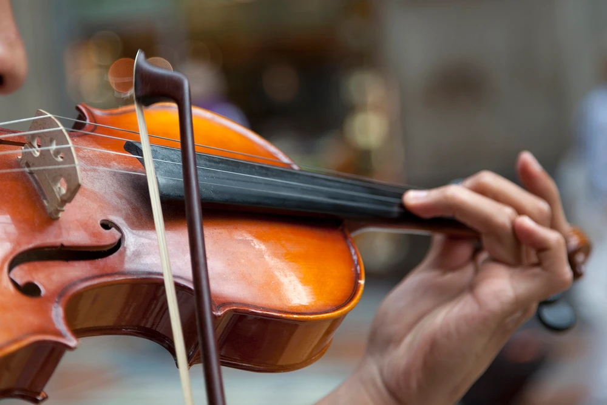

My Hobbies
Playing Cricket
The whole world was a playground. It was a great fun.
International Cricket Council controls the game throughout the world. England recently won the T20 World Cup in Australia.
Save for LaterMusic
Spent few years in the childhood learning to play Violin. I found it tough initially but picked up basics of it in few months. Top 10 violin concertos is a very informative website about some of the greatest violin concertos.
Save for Later
 Like(0)
Leave Comment
Like(0)
Leave CommentAll Comments: